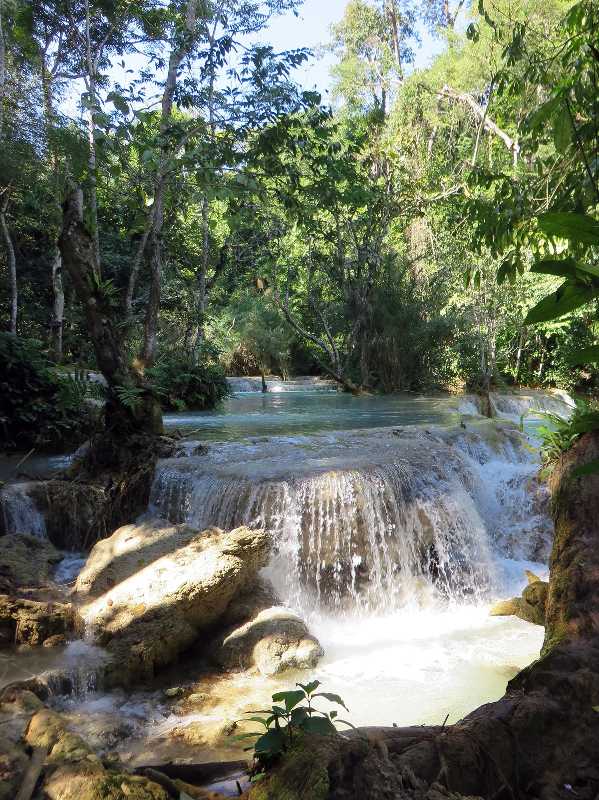
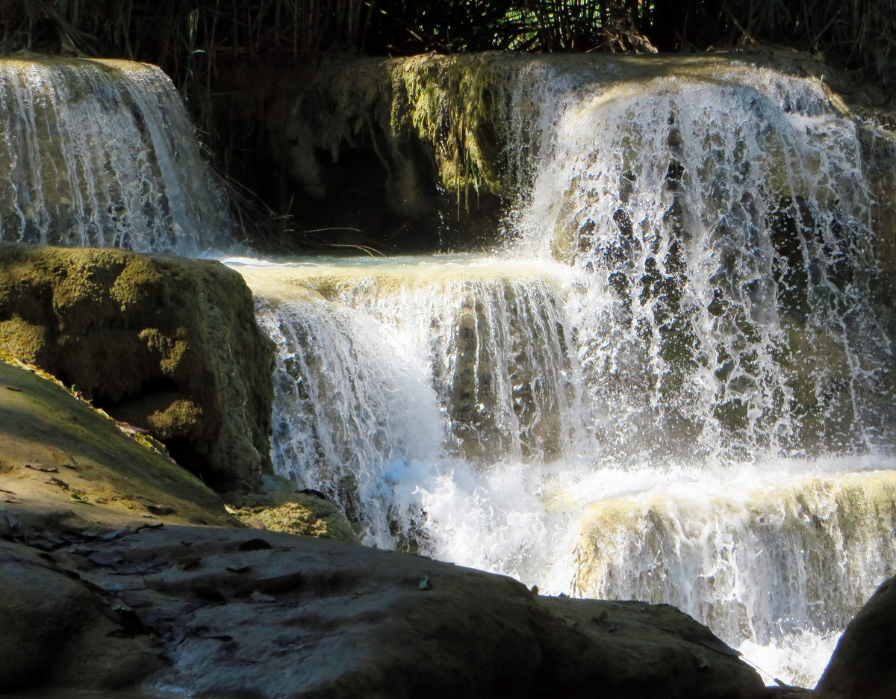

Kuang Si Falls
Useful Information
|  |
| Image: Kuang Si Waterfalls. Public Domain.. |
| Location: | Ban Long. 29km south of Louangphabang. |
| Open: | |
| Fee: | |
| Classification: |
 Tufa Deposits
Rimstone Pool Tufa Deposits
Rimstone Pool
|
| Light: | |
| Dimension: | |
| Guided tours: | |
| Photography: | |
| Accessibility: | |
| Bibliography: | |
| Address: | |
| As far as we know this information was accurate when it was published (see years in brackets), but may have changed since then. Please check rates and details directly with the companies in question if you need more recent info. |
|
History
Description
|  |
| Image: Kuang Si Waterfalls. Public Domain.. |
The Kuang Si Waterfalls are a combination of waterfalls and rimstone pools. The water has the typical blue colour of limestone rich karst water, and the serene pools are used for bathing. There is first a series of three rimstone pools on top, followed by a 50m high waterfall and then again shallow rimstone pools. The highest pool has a 6m high rim and is used for swimming.
Kuang Si is one of Louangphabang’s most popular tourist attractions. It is reached on a journey through rice fields and Hmong villages. There is a trail connecting all the pools, and the park has picnic tables and concession stands which sell food and beverages. There are tables right at the lower pools. There is no public transport to the park, so you have to rent a motorcycle or hire a tuk-tuk or take a minibus from Naluang Bus Station. But the best way to get there is by an organizd tour. Those are offered at hotels and include the transfer and the entrance fee and are rather cheap.

|
| Kuang Si Waterfalls Gallery |
 Search Google for "Kuang Si Falls"
Search Google for "Kuang Si Falls" Google Earth Placemark
Google Earth Placemark Kuang Si Falls (visited: 20-Jun-2019)
Kuang Si Falls (visited: 20-Jun-2019) Kuang Si Waterfalls (visited: 20-Jun-2019)
Kuang Si Waterfalls (visited: 20-Jun-2019){kind=link}
{kind=link}
{kind=link}
{kind=link}
{kind=link}
{kind=link}